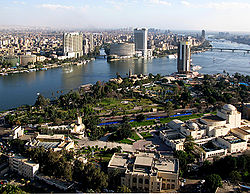

Yellow Nile
The Yellow Nile is a former tributary that connected the Ouaddai Highlands of Eastern Chad to the Nile River Valley c. 8000 to c. 1000 BCE. An unending source of sustenance, it provided a crucial role in the development of Egyptian civilization. REF_IMG 1.1
DREF_IMG1.1 Pliny the Elders peculated on the source of the Nile. .
REF_IMG 1.3
DREF_IMG1.3 Henry Morton Stanley confirmed the source of the Nile in 1872.
Silt deposits from the Nile made the surrounding land fertile because the river overflowed its banks annually. For example, a text of Tuthmosis-I in nubia describes the great Euphrates river as the" inverted water that goes downstream in going upstream. " . The wadi passes through Gharb Darfur near the northern border with Chad and meets up with the Nile near the southern point of the Great Bend. FIGURE_TAG doc0_img1 CLOSE_FIGURE_TAG. Wheat was a crucial crop in the famine-plagued Middle East. DREF_IMG0.1: Three rivers flowed into the Nile from the south and thus served as its sources: the Blue Nile, the White Nile and the Arbara. Lost headwaters
Formerly Lake Tanganyika drained northwards along the African Rift Valley into the Albert Nile, making the Nile about 900 miles (1,400 km) longer, until blocked in Miocene times by the bulk of the Virunga Volcanoes. . This trading system secured Egypt's diplomatic relationships with other countries, and contributed to economic stability. Within the southern section between Aswan and Khartoum, land which was called Nubia, the River passes through formations of hard igneous rock, resulting in a series of rapids, or cataracts, which form a natural boundary to the south. REF_IMG 0.1
DREF_IMG0.1 Three rivers flowed into the Nile from the south and thus served as its sources: the Blue Nile, the White Nile and the Arbara.
REF_IMG 0.4
DREF_IMG0.4 A typical Felucca on the NileThe Nile flowed from south to north at an average speed of about four knots during inundation season.
Between the first and second cataracts lay Lower Nubia, and between the second and sixth cataracts lay upper Nubia. TheIshango boneis probably an early tally stick. DREF_IMG2.1
DREF_IMG2.1 Reconstruction of theOikoumene(inhabited world), an ancient map based onHerodotus' description of the world, circa 450 BCE. .
: Reconstruction of the
Oikoumene
(inhabited world), an ancient map based on
Herodotus' description of the world, circa 450 BCE. . It has been suggested that this shows prime numbers and multiplication, but this is disputed. DREF_IMG3.3: The Nile passes through Cairo, Egypt's capital city
The Nile has long been used to transport goods along its length. From Armant to Hu, the River extends about 180 kilometers and divides the narrow southern valley from the wider northern valley. REF_IMG 0.1 Winter winds blow south, up river, so ships could sail up river, and down river using the flow of the river. REF_IMG 3.1
DREF_IMG3.1 The confluence of theKageraandRuvuburivers nearRusumo Falls, part of the Nile's upper reaches. .
REF_IMG 3.2
DREF_IMG3.2 Dhows on the Nile.
REF_IMG 3.3
DREF_IMG3.3 The Nile passes through Cairo, Egypt's capital cityThe Nile has long been used to transport goods along its length.

While most Egyptians still live in the Nile valley, the 1970 completion of the Aswan High Dam ended the summer floods and their renewal of the fertile soil, fundamentally changing farming practices. DREF_IMG2.2: Historic map of the River Nile by
Piri Reis
The Nile (iteru in Ancient Egyptian) has been the lifeline of civilization in Egypt since the Stone Age, with most of the population and all of the cities of Egypt resting along those parts of the Nile valley lying north of Aswan. Water buffalo were introduced from Asia, and Persians introduced camels in the 7th century BC. These animals were killed for meat, and were domesticated and used for ploughing
or in the camels' case, carriage. Climate change at the end of the most recent ice age led to the formation of the Sahara desert, possibly as long ago as 3400 BC. REF_IMG 2.2
DREF_IMG2.2 Historic map of the River Nile byPiri ReisThe Nile (iteru in Ancient Egyptian) has been the lifeline of civilization in Egypt since the Stone Age, with most of the population and all of the cities of Egypt resting along those parts of the Nile valley lying north of Aswan.
The Delta spans some 8,500 square miles and is fringed in its coastal regions by lagoons, wetlands, lakes and sand dunes. REF_IMG 0.2
DREF_IMG0.2 The Nile Valley is a canyon running 660 miles long with a floodplain occupying 4,250 square miles.
The Delta represented 63 percent of the inhabited area of Egypt, extending about 200 kilometers from south to north and roughly 400 kilometers from east to west. The Suddwetlands in Sudan also forms a formidable navigation obstacle and impede water flow, to the extent that Sudan had once attempted to canalize (the Jonglei Canal) to bypass the swamps. While today the Nile flows through the Delta in only two principal branches, the Damietta and the Rosetta, in ancient times there were three principal channels, known as the water of Pre, the water of Ptah and the water of Amun. In classical or Graeco-Roman times, these were called the Pelusiac, the Sebennytic, and the Canopic branches. Nile cities include Khartoum, Aswan, Luxor (Thebes), and the Giza
Cairo conurbation. There were additionally subsidiary branches or artificially cut channels. The Nile was considered to be a causeway from life to death and the afterlife. An Eonile canyon, now filled by surface drift, represents an ancestral Nile called the Eonile that flowed during the later Miocene(23
5. 3 million years before present). Since these mounds would not be submerged by the inundation, they were ideal sites for Predynastic and Early Dynastic settlements, and indeed evidence of human habitation have been found. The east was thought of as a place of birth and growth, and the west was considered the place of death, as the god Ra, the Sun, underwent birth, death, and resurrection each day as he crossed the sky. This part of the river is a regular tourist route, with cruise ships and traditional wooden sailing boats known as feluccas. The Eonile transported clastic sediments to the Mediterranean; several natural gas fields have been discovered within these sediments. The Eastern Desert was exploited in Pharaonic times for its rich minerals. During the late-Miocene Messinian salinity crisis, when the Mediterranean Sea was a closed basin and evaporated to the point of being empty or nearly so, the Nile cut its course down to the new base level until it was several hundred feet below world ocean level at Aswan and 8,000 feet (2,400 m) below Cairo. The mere mention of the name of the Nile evokes for modern man images of Pyramids, great temples, fantastic tales of mummies, and wondrous treasures. Security concerns have limited cruising on the northernmost portion for many years. In fact, for thousands of years, the River has made life possible for hundreds of thousands of people and animals, and has shaped the culture we today are only beginning to truly understand. REF_IMG 0.1 A computer simulation study to plan the economic development of the Nile was directed by H. A. W. Morrice and W. N. Allan, for the Ministry of Hydro-power of the Republic of the Sudan, during 1955
1957. DREF_IMG1.2: Richard Francis Burton, Victorian explorer. . At some point the sediments raised the riverbed sufficiently for the river to overflow westward into a depression to create Lake Moeris. In religion, for example, the creator sun-god Ra(Re) was believed to be ferried across the sky daily in a boat (compare that to the Greeks and Romans whose non-creator sun-god rode across the sky in a chariot driven by fiery horses, and Hymns to Hapy (Hapi), the deity personifying the Nile, praise his bounty and offerings were left to him, and the creation myths, as mentioned earlier, revolve around the primordial mound rising from the floodwaters surrounding it; in ritual where Nile creatures such as the hippopotamus, whose shape the goddess Tawaret took, or the crocodile, called Sobek, or Heket (Heqet), the frog, deities deemed powerful in the processes of childbirth and fertility, were revered, in writing, where floral signs such as the lotus and papyrus figured prominently, in architecture, where the very structure of temples emulated the mounds of the Nile and its waves, from the bottom to the top of capital columns and the trim on walls, and in travel, where models of boats have been found dating from the fifth millennium BCE. . M. P. Barnett directed the software development and computer operations. DREF_IMG0.3: The god Hapy was earlier mentioned as being the personification of the floods and ensuing fertility. Despite the failed attempts of the Greeks and Romans to penetrate the Sudd wetlands in southern Sudan, the upper reaches of the Nile remained largely unknown. REF_IMG 1.1REF_IMG 1.3 Two Hymns to the Nile, one probably composed in the Middle Kingdom, the second written later in the Ramesside period, praise Hapy and the river for its renewed life for Egypt. REF_IMG 0.3
DREF_IMG0.3 The god Hapy was earlier mentioned as being the personification of the floods and ensuing fertility.
Various expeditions failed to determine the river's source, thus yielding classical Hellenistic and Roman representations of the river as a male god with his face and head obscured in drapery. The Nile was much longer at that time, with its furthest headwaters in northern Zambia. The calculations were enabled by accurate monthly inflow data collected for 50 years. " Hail to you Hapy, Sprung from earth, Come to nourish Egypt
Food provider, bounty maker, Who creates all that is good! Agatharcides records that in the time ofPtolemy II Philadelphus, a military expedition had penetrated far enough along the course of the Blue Nile to determine that the summer floods were caused by heavy seasonal rainstorms in the Ethiopian Highlands, but no European of antiquity is known to have reached Lake Tana. Conqueror of the Two Lands, He fills the stores, Makes bulge the barns, Gives bounty to the poor. " (from the Middle Kingdom hymn as translated by Lichtheim)
From the earliest times, the waters of the Nile, swollen by monsoon rains in Ethiopia, flooded over the surrounding valley every year between June and September of the modern calendar. The underlying principle was the use of over-year storage, to conserve water from rainy years for use in dry years. Europeans began to learn about the origins of the Nile in the 15th and 16th centuries, when travelers to Ethiopia visited Lake Tana and the source of the Blue Nile in the mountains south of the lake. A nilometer was used to measure the height of the Nile in ancient times. Although James Bruce claimed to be the first European to have visited the headwaters,modern writers give the credit to the Jesuit Pedro P
ez. REF_IMG 1.1REF_IMG 1.3 One is that the integrated drainage of the Nile is of young age, and that the Nile basin was formerly broken into series of separate basins, only the most northerly of which fed a river following the present course of the Nile in Egypt and Sudan. P
ez
account of the source of the Nile is a long and vivid account of Ethiopia. Surviving nilometers exist connected with the temples at Philae, on the Nubian Egyptian border, Edfu, Esna, Kom Ombo, and Dendera, as well as the best-known nilometer on the island of Elephantine at Aswan. It was published in full only in the early 20th century, although it was featured in works of P
ez
contemporaries, including Baltazar T
llez,Athanasius Kircher and byJohann Michael Vansleb. REF_IMG 1.1REF_IMG 1.3 Said postulated that Egypt itself supplied most of the waters of the Nile during the early part of its history. REF_IMG 2.2 The ancient Egyptian calendar, made up of twelve months of 30 days each, was divided into three seasons, based upon the cycles of the Nile. Europeans had been resident in Ethiopia since the late 15th century, and one of them may have visited the headwaters even earlier without leaving a written trace. John Bermudez published the first description of the Tis Issat Falls in his 1565 memoirs, compared them to the Nile Falls alluded to in Cicero's De Republica. It contains about 0. 1 percent of combined nitrogen, 0. 2 percent of phosphorus anhydrides and 0. 6 percent of potassium. REF_IMG 0.1 Since most of the Egyptian people worked as farmers, when the Nile was at its highest and they could not plant, they were drafted by corvee into labor projects such as building Pyramids, repairing temples and other monuments and working on the king
s tomb. Herodotus, the great Greek philosopher, wrote of the Nile:" the river rises of itself, waters the fields, and then sinks back again; thereupon each man sows his field and waits for the harvest. " The ancients mistakenly believed that the Niger River represented the upper reaches of the White Nile. REF_IMG 1.1REF_IMG 1.3 For example, Pliny the Elder wrote that the Nile had its origins" in a mountain of lower Mauretania" , flowed above ground for" many days" distance, then went underground, reappeared as a large lake in the territories of the Masaesyli, then sank again below the desert to flow underground" for a distance of 20 days' journey till it reaches the nearest Ethiopians. " This description would lead the casual reader to imagine Egypt as being a great paradise where the people simply sat and waited for the sowing and harvesting to need be done. REF_IMG 0.1 Despite the development of many reservoirs, drought during the 1980s led to widespread starvation in Ethiopia and Sudan, but Egypt was nourished by water impounded in Lake Nasser. The Sudd swamps which form the central part of the basin may still be subsiding. Too high a flood from their river, and villages would be destroyed; too low a flood, and the land would turn to dust and bring famine. Believing he had found the source of the Nile on seeing this" vast expanse of open water" for the first time, Speke named the lake after the then Queen of the United Kingdom. REF_IMG 1.2
DREF_IMG1.2 Richard Francis Burton, Victorian explorer. .
Burton, recovering from illness and resting further south on the shores of Lake Tanganyika, was outraged that Speke claimed to have proved his discovery to be the true source of the Nile when Burton regarded this as still unsettled. The rock inscription called the Famine Stela, dated in its present form from the Ptolemaic period, recounts an incident, (whether real or fictitious is not currently known for certain), from the period of King Djoser of the 3rd Dynasty. REF_IMG 0.3 Countries including Uganda, Sudan, Ethiopia and Kenya have complained about Egyptian domination of its water resources. The King writes to a governor in the south, describing himself as disheartened over the country
s seven-year famine. A very public quarrel ensued, which sparked a great deal of intense debate within the scientific community and interest by other explorers keen to either confirm or refute Speke's discovery. The King learns from a priest of Imhotep that if gifts are given to the temple of Khnum, the creator-god of the region, who it was believed had control over the Nile and its flooding, then the famine would be ended. It was ultimately Welsh-American explorer Henry Morton Stanley who confirmed Speke's discovery, circumnavigating Lake Victoria and reporting the great outflow at Ripon Falls on the Lake's northern shore. The expedition began at the source of the Nile in Uganda on January 17, 2004 and arrived safely at the Mediterranean in Rosetta, four and a half months later. REF_IMG 3.2REF_IMG 3.3 Laird Shipyard of Liverpool sent an iron steamer to the Nile in the 1830s. The Egyptian Nile connected to the Sudanese Nile, which captures the Ethiopian and Equatorial headwaters during the current stages of tectonic activity in the Eastern, Central and Sudanese Rift Systems. With the completion of the Suez Canal and the British takeover of Egypt in the 1870s, more British river steamers followed. On April 28, 2004, geologist Pasquale Scaturro and his partner, kayaker and documentary filmmaker Gordon Brown became the first people to navigate the Blue Nile, from Lake Tana in Ethiopia to the beaches of Alexandria on the Mediterranean. The water level was on average about 25-33 feet deep and navigation was fast. REF_IMG 0.1REF_IMG 0.4 The Siege of Khartoum was broken with purpose-built sternwheelers shipped from England and steamed up the river to retake the city. Though their expedition included others, Brown and Scaturro were the only ones to complete the entire journey. That made a river voyage from Thebes (modern Luxor) north to Memphis (near modern Cairo) lasting approximately two weeks. The Blue Nile connected to the main Nile during the 70,000
80,000 years B. P. wet period. At the great bend near Qena, the Nile would flow from west to east and then back from east to west, slowing down travel. On January 29, 2005 Canadian Les Jickling and New Zealander Mark Tanner completed the first human powered transit. No sailing was done at night because of the danger of running aground on one of the many sandbank and low islands. Sudan steamer traffic was a lifeline as few railways or roads were built in that country. The White Nile system in Bahr El Arab and White Nile Rifts remained a closed lake until the connection of the Victoria Nile to the main system some 12,500 years ago. REF_IMG 2.2 When one cruises on the Nile, one might pass by the ancient and significant sites of Karnak itself, Luxor, on the other side of the river from Karnak,Dendera, with its grand temple to the goddess Hathor, Abydos, with its marvelous temple built by Seti I as well as being the site of Earlier Dynastic tombs, Esna, with its temple to the potter and creator-god Khnum, lord of the region who was credited as having the power over the river and its richness, Edfu, with its temple to Horus, Kom Ombo, with its double temple to Sobek and a form of Horus called Haroeris, and Aswan itself, with its mighty modern dam. A team led by South Africans Peter Meredith and Hendrik Coetzee on April 30, 2005, became the first to navigate the remote source of the Nile, the Akagera river, which starts as the Rukarara in Nyungwe forest in Rwanda.